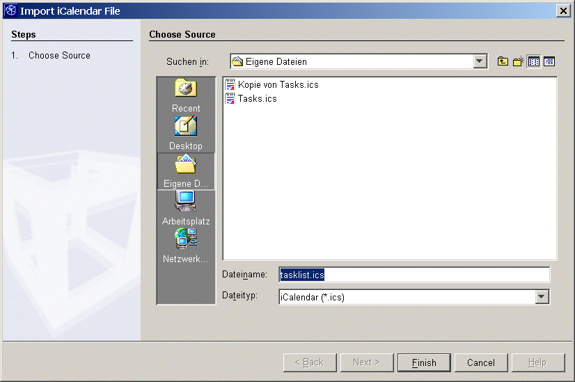
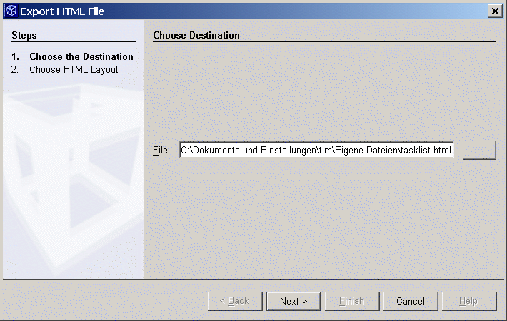
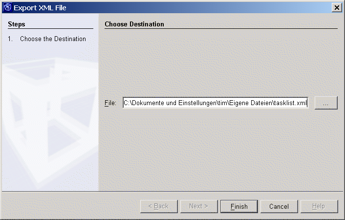
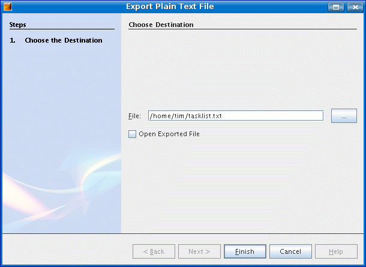
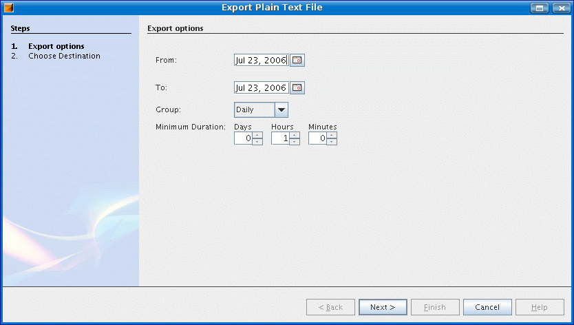
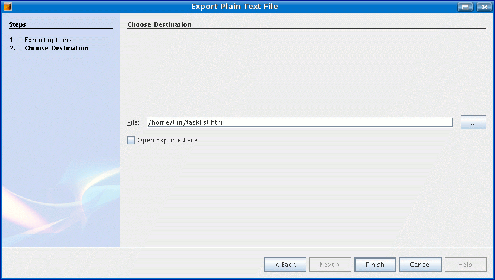

Export and Import Wizards
- Import of an iCalendar file. Just choose the source file
and
press "Finish". All the tasks in the current task list will be replaced
by imported ones.

- Export in HTML. Choose the destination file. Press "Next".

Choose the layout of the HTML file from the combobox and press
"Finish". You can also preview the exported file by selecting the
checkbox "Open the resulting HTML file in browser".

- Export to XML or iCalendar / iCalender for Google Calender (http://calender.google.com). Just choose the destination
file and
press
"Finish".

- Export as plain text. You can preview the exported file by
selecting the
checkbox "Open Exported File".

- Export Spent Times. On the first page you can specify a time
period, grouping options and minumum duration for exported tasks. You
can preview the exported file by
selecting the
checkbox "Open Exported File" on the second page.


Comments & requests to dev@tasklist.netbeans.org.
Further information at http://tasklist.netbeans.org.